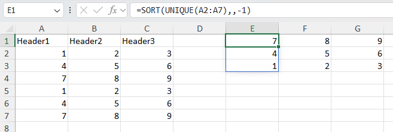

Cells and data
Cell referencing
XLSX.CellRef — Type
CellRef(n::AbstractString)
CellRef(row::Int, col::Int)A CellRef represents a cell location given by row and column identifiers.
CellRef("B6") indicates a cell located at column 2 and row 6.
These row and column integers can also be passed directly to the CellRef constructor: CellRef(6,2) == CellRef("B6").
Finally, a convenience macro @ref_str is provided: ref"B6" == CellRef("B6").
Examples
cn = XLSX.CellRef("AB1")
println( XLSX.row_number(cn) ) # will print 1
println( XLSX.column_number(cn) ) # will print 28
println( string(cn) ) # will print out AB1
println( cellname(cn) ) # will print out AB1
cn = XLSX.CellRef(1, 28)
println( XLSX.row_number(cn) ) # will print 1
println( XLSX.column_number(cn) ) # will print 28
println( string(cn) ) # will print out AB1
println( cellname(cn) ) # will print out AB1
cn = XLSX.ref"AB1"
println( XLSX.row_number(cn) ) # will print 1
println( XLSX.column_number(cn) ) # will print 28
println( string(cn) ) # will print out AB1
println( cellname(cn) ) # will print out AB1XLSX.row_number — Function
row_number(c::CellRef) :: IntReturns the row number of a given cell reference.
XLSX.column_number — Function
column_number(c::CellRef) :: IntReturns the column number of a given cell reference.
XLSX.eachrow — Function
eachrow(sheet)Creates a row iterator for a worksheet.
Base.eachrow(sheet::Worksheet) is defined as a synonym of XLSX.eachrow(sheet::Worksheet)
Example: Query all cells from columns 1 to 4.
left = 1 # 1st column
right = 4 # 4th column
for sheetrow in eachrow(sheet)
for column in left:right
cell = XLSX.getcell(sheetrow, column)
# do something with cell
end
endThe eachrow row iterator will not return any row that consists entirely of EmptyCells. These empty rows are not represented in the .xlsx file and are therefore not seen by the iterator. The length(eachrow(sheet)) function returns the number of rows that are not entirely empty and will, in any case, only succeed if the worksheet cache is in use.
XLSX.eachtablerow — Function
eachtablerow(sheet, [columns]; [first_row], [column_labels], [header], [stop_in_empty_row], [stop_in_row_function], [keep_empty_rows], [normalizenames]) -> TableRowIteratorConstructs an iterator of table rows. Each element of the iterator is of type TableRow.
header is a boolean indicating whether the first row of the table is a table header.
If header == false and no column_labels were supplied, column names will be generated following the column names found in the Excel file.
The columns argument is a column range, as in "B:E". If columns is not supplied, the column range will be inferred by the non-empty contiguous cells in the first row of the table.
The user can replace column names by assigning the optional column_labels input variable with a Vector{Symbol}.
stop_in_empty_row is a boolean indicating whether an empty row marks the end of the table. If stop_in_empty_row=false, the iterator will continue to fetch rows until there's no more rows in the Worksheet. The default behavior is stop_in_empty_row=true. Empty rows may be returned by the iterator when stop_in_empty_row=false.
stop_in_row_function is a Function that receives a TableRow and returns a Bool indicating if the end of the table was reached. The row that satisfies stop_in_row_function is excluded from the table.
Example for stop_in_row_function:
function stop_function(r)
v = r[:col_label]
return !ismissing(v) && v == "unwanted value"
endkeep_empty_rows determines whether rows where all column values are equal to missing are kept (true) or skipped (false) by the row iterator. keep_empty_rows never affects the bounds of the iterator; the number of rows read from a sheet is only affected by first_row, stop_in_empty_row and stop_in_row_function (if specified). keep_empty_rows is only checked once the first and last row of the table have been determined, to see whether to keep or drop empty rows between the first and the last row.
normalizenames controls whether column names will be "normalized" to valid Julia identifiers. By default, this is false. If normalizenames=true, then column names with spaces or that start with numbers will be adjusted with underscores to become valid Julia identifiers. This is useful when you want to access columns via dot-access or getproperty, like file.col1. The identifier that comes after the . must be valid, so spaces or identifiers starting with numbers aren't allowed. (Based on CSV.jl's CSV.normalizename.)
Example code:
for r in XLSX.eachtablerow(sheet)
# r is a `TableRow`. Values are read using column labels or numbers.
rn = XLSX.row_number(r) # `TableRow` row number.
v1 = r[1] # will read value at table column 1.
v2 = r[:COL_LABEL2] # will read value at column labeled `:COL_LABEL2`.
endSee also XLSX.gettable.
Cell data
XLSX.readdata — Function
readdata(source, sheet, ref)
readdata(source, sheetref)Return a scalar, vector or matrix with values from a spreadsheet file. 'ref' can be a defined name, a cell reference or a cell, column, row or non-contiguous range.
See also XLSX.getdata.
Examples
These function calls are equivalent.
julia> XLSX.readdata("myfile.xlsx", "mysheet", "A2:B4")
3×2 Array{Any,2}:
1 "first"
2 "second"
3 "third"
julia> XLSX.readdata("myfile.xlsx", 1, "A2:B4")
3×2 Array{Any,2}:
1 "first"
2 "second"
3 "third"
julia> XLSX.readdata("myfile.xlsx", "mysheet!A2:B4")
3×2 Array{Any,2}:
1 "first"
2 "second"
3 "third"Non-contiguous ranges return vectors of Array{Any, 2} with an entry for every non-contiguous (comma-separated) element in the range.
julia> XLSX.readdata("customXml.xlsx", "Mock-up", "Location") # `Location` is a `definedName` for a non-contiguous range
4-element Vector{Matrix{Any}}:
["Here";;]
[missing;;]
[missing;;]
[missing;;]XLSX.getdata — Function
getdata(sheet, ref)
getdata(sheet, row, column)Returns a scalar, matrix or a vector of matrices with values from a spreadsheet.
ref can be a cell reference or a range or a valid defined name.
If ref is a single cell, a scalar is returned.
Most ranges are rectangular and will return a 2-D matrix (Array{AbstractCell, 2}). For row and column ranges, the extent of the range in the other dimension is determined by the worksheet's dimension.
A non-contiguous range (which may not be rectangular) will return a vector of Array{AbstractCell, 2} matrices with one element for each non-contiguous (comma separated) element in the range.
Indexing in a Worksheet will dispatch to getdata method.
Example
julia> f = XLSX.readxlsx("myfile.xlsx")
julia> sheet = f["mysheet"] # Worksheet
julia> matrix = sheet["A1:B4"] # CellRange
julia> matrix = sheet["A:B"] # Column range
julia> matrix = sheet["1:4"] # Row range
julia> matrix = sheet["Contiguous"] # Named range
julia> matrix = sheet[1:30, 1] # use unit ranges to define rows and/or columns
julia> matrix = sheet[[1, 2, 3], 1] # vectors of integers to define rows and/or columns
julia> vector = sheet["A1:A4,C1:C4,G5"] # Non-contiguous range
julia> vector = sheet["Location"] # Non-contiguous named range
julia> scalar = sheet[2, 2] # Cell "B2"
See also XLSX.readdata.
getdata(ws::Worksheet, cell::Cell) :: CellValueReturns a Julia representation of a given cell value. The result data type is chosen based on the value of the cell as well as its style.
For example, date is stored as integers inside the spreadsheet, and the style is the information that is taken into account to chose Date as the result type.
For numbers, if the style implies that the number is visualized with decimals, the method will return a float, even if the underlying number is stored as an integer inside the spreadsheet XML.
If cell has empty value or empty String, this function will return missing.
XLSX.getcell — Function
getcell(xlsxfile, cell_reference_name) :: AbstractCell
getcell(worksheet, cell_reference_name) :: AbstractCell
getcell(sheetrow, column_name) :: AbstractCell
getcell(sheetrow, column_number) :: AbstractCellReturns the internal representation of a worksheet cell.
Returns XLSX.EmptyCell if the cell has no data.
getcell(sheet, ref)
getcell(sheet, row, col)Return an AbstractCell that represents a cell in the spreadsheet. Return a 2-D matrix as Array{AbstractCell, 2} if ref is a rectangular range. For row and column ranges, the extent of the range in the other dimension is determined by the worksheet's dimension. A non-contiguous range (which may not be rectangular) will return a vector of Array{AbstractCell, 2} with one element for each non-contiguous (comma separated) element in the range.
If ref is a range, getcell dispatches to getcellrange.
Example:
julia> xf = XLSX.readxlsx("myfile.xlsx")
julia> sheet = xf["mysheet"]
julia> cell = XLSX.getcell(sheet, "A1")
julia> cell = XLSX.getcell(sheet, 1:3, [2,4,6])
Other examples are as getdata().
XLSX.getcellrange — Function
getcellrange(sheet, rng)Return a matrix with cells as Array{AbstractCell, 2}. rng must be a valid cell range, column range or row range, as in "A1:B2", "A:B" or "1:2", or a non-contiguous range. For row and column ranges, the extent of the range in the other dimension is determined by the worksheet's dimension. A non-contiguous range (which may not be rectangular) will return a vector of Array{AbstractCell, 2} with one element for each non-contiguous (comma separated) element in the range.
Example:
julia> ncr = "B3,A1,C2" # non-contiguous range, "out of order".
"B3,A1,C2"
julia> XLSX.getcellrange(f[1], ncr)
3-element Vector{Matrix{XLSX.AbstractCell}}:
[XLSX.Cell(B3, 0x0000000000000018, 0x00000000, 0x0000, XLSX.CT_INT, false);;]
[XLSX.Cell(A1, 0x0000000000000018, 0x00000000, 0x0000, XLSX.CT_INT, false);;]
[XLSX.Cell(C2, 0x0000000000000018, 0x00000000, 0x0000, XLSX.CT_INT, false);;]
XLSX.gettable — Function
gettable(
sheet,
[columns];
[first_row],
[column_labels],
[header],
[infer_eltypes],
[stop_in_empty_row],
[stop_in_row_function],
[keep_empty_rows],
[normalizenames]
) -> DataTableReturns data from a spreadsheet as a struct XLSX.DataTable which can be passed directly to any function that accepts Tables.jl data. (e.g. DataFrame from package DataFrames.jl).
Use columns argument to specify which columns to get. For example, "B:D" will select columns B, C and D. If columns is not given, the algorithm will find the first sequence of consecutive non-empty cells.
Use first_row to indicate the first row from the table. first_row=5 will look for a table starting at sheet row 5. If first_row is not given, the algorithm will look for the first non-empty row in the spreadsheet.
header is a Bool indicating if the first row is a header. If header=true and column_labels is not specified, the column labels for the table will be read from the first row of the table. If header=false and column_labels is not specified, the algorithm will generate column labels. The default value is header=true.
Use column_labels as a vector of symbols to specify names for the header of the table.
Use normalizenames=true to normalize column names to valid Julia identifiers.
Use infer_eltypes=true to get data as a Vector{Any} of typed vectors. The default value is infer_eltypes=true.
stop_in_empty_row is a boolean indicating whether an empty row marks the end of the table. If stop_in_empty_row=false, the TableRowIterator will continue to fetch rows until there's no more rows in the Worksheet. The default behavior is stop_in_empty_row=true.
stop_in_row_function is a Function that receives a TableRow and returns a Bool indicating if the end of the table was reached.
Example for stop_in_row_function
function stop_function(r)
v = r[:col_label]
return !ismissing(v) && v == "unwanted value"
endkeep_empty_rows determines whether rows where all column values are equal to missing are kept (true) or dropped (false) from the resulting table. keep_empty_rows never affects the bounds of the table; the number of rows read from a sheet is only affected by first_row, stop_in_empty_row and stop_in_row_function (if specified). keep_empty_rows is only checked once the first and last row of the table have been determined, to see whether to keep or drop empty rows between the first and the last row.
Example
julia> using DataFrames, PrettyTables, XLSX
julia> df = XLSX.openxlsx("myfile.xlsx") do xf
DataFrame(XLSX.gettable(xf["mysheet"]))
end
julia> PrettyTable(XLSX.gettable(xf["mysheet"], "A:C"))
┌─────────┬─────────┬─────────┐
│ Header1 │ Header2 │ Header3 │
├─────────┼─────────┼─────────┤
│ 1 │ 2 │ 3 │
│ 4 │ 5 │ 6 │
│ 7 │ 8 │ 9 │
└─────────┴─────────┴─────────┘
See also: XLSX.readtable, XLSX.readto.
XLSX.readtable — Function
readtable(
source,
[sheet,
[columns]];
[first_row],
[column_labels],
[header],
[infer_eltypes],
[stop_in_empty_row],
[stop_in_row_function],
[enable_cache],
[keep_empty_rows],
[normalizenames]
) -> DataTableReturns tabular data from a spreadsheet as a struct XLSX.DataTable. Use this function to create a DataFrame from package DataFrames.jl (or other Tables.jl` compatible object).
If sheet is not given, the first sheet in the XLSXFile will be used.
Use columns argument to specify which columns to get. For example, "B:D" will select columns B, C and D. If columns is not given, the algorithm will find the first sequence of consecutive non-empty cells. A valid sheet must be specified when specifying columns.
Use first_row to indicate the first row of the table. first_row=5 will look for a table starting at sheet row 5. If first_row is not given, the algorithm will look for the first non-empty row in the spreadsheet.
header is a Bool indicating if the first row is a header. If header=true and column_labels is not specified, the column labels for the table will be read from the first row of the table. If header=false and column_labels is not specified, the algorithm will generate column labels. The default value is header=true.
Use column_labels to specify names for the header of the table.
Use normalizenames=true to normalize column names to valid Julia identifiers.
Use infer_eltypes=true to get data as a Vector{Any} of typed vectors. The default value is infer_eltypes=true.
stop_in_empty_row is a boolean indicating whether an empty row marks the end of the table. If stop_in_empty_row=false, the TableRowIterator will continue to fetch rows until there's no more rows in the Worksheet or range. The default behavior is stop_in_empty_row=true.
stop_in_row_function is a Function that receives a TableRow and returns a Bool indicating if the end of the table was reached.
Example for stop_in_row_function:
function stop_function(r)
v = r[:col_label]
return !ismissing(v) && v == "unwanted value"
endenable_cache is a boolean that determines whether cell data are loaded into the worksheet cache on reading. The default behavior is enable_cache=false.
keep_empty_rows determines whether rows where all column values are equal to missing are kept (true) or dropped (false) from the resulting table. keep_empty_rows never affects the bounds of the table; the number of rows read from a sheet is only affected by first_row, stop_in_empty_row and stop_in_row_function (if specified). keep_empty_rows is only checked once the first and last row of the table have been determined, to see whether to keep or drop empty rows between the first and the last row. The default behavior is keep_empty_rows=false.
Example
julia> using DataFrames, XLSX
julia> df = DataFrame(XLSX.readtable("myfile.xlsx", "mysheet"))See also: XLSX.gettable, XLSX.readto.
XLSX.readto — Function
readto(
source,
[sheet,
[columns]],
sink;
[first_row],
[column_labels],
[header],
[infer_eltypes],
[stop_in_empty_row],
[stop_in_row_function],
[enable_cache],
[keep_empty_rows],
[normalizenames]
) -> sinkRead and parse an Excel worksheet, materializing directly using the sink function, which can be any Tables.jl-compatible function (e.g. DataFrame, StructArray or TypedTable`).
Takes the same keyword arguments as XLSX.readtable
Example
julia> using DataFrames, StructArrays, TypedTables, XLSX
julia> df = XLSX.readto("myfile.xlsx", DataFrame)
julia> sa = XLSX.readto("myfile.xlsx", StructArray)
julia> tt = XLSX.readto("myfile.xlsx", Table) # from TypedTables.jl
julia> df = XLSX.readto("myfile.xlsx", "mysheet", DataFrame)
julia> df = XLSX.readto("myfile.xlsx", "mysheet", "A:C", DataFrame)See also: XLSX.gettable.
XLSX.gettransposedtable — Function
gettransposedtable(
sheet,
[rows];
[first_column],
[column_labels],
[header],
[normalizenames]
) -> DataTableRead a transposed table from a worksheet in which data are arranged in rows rather than columns. For example:
Category "A", "B", "C", "D"
variable 1 10, 20, 30, 40
variable 2 15, 25, 35, 40
variable 3 20, 30, 40, 50Returns data from a worksheet as a struct XLSX.DataTable which can be passed directly to any function that accepts Tables.jl data. (e.g. DataFrame from package DataFrames.jl).
Use the rows argument to specify which worksheeet rows to include. For example, "2:7" will select rows 2 to 7 (inclusive). If rows is not given, the algorithm will find the first sequence of consecutive non-empty cells. If rows includes leading or trailing rows that are completely empty, these rows will be omitted from the returned table. In any case, the table will be truncated at the first and last non-empty rows, even if this range is smaller than rows. A valid sheet must be specified when specifying rows.
Use first_column to indicate the first column of the table. May be given as a column number or as a string, so that first_column="E" and first_column=5 will both look for a table starting at column 5 ("E"). Any leading completely empty columns will be ignored, including the first_column. If first_column is not given, the algorithm will look for the first non-empty column in the spreadsheet.
header is a Bool indicating if the first row is a header. If header=true and column_labels is not specified, the column labels for the table will be read from the first column of the table. If header=false and column_labels is not specified, the algorithm will generate column labels. The default value is header=true.
Use column_labels as a vector of symbols to specify names for the header of the table. If header=true and column_labels is also given, column_labels will be preferred and the first column of the table will be ignored.
Use normalizenames=true to normalize column names to valid Julia identifiers. The default is normalizenames=false
Examples
julia> using DataFrames, PrettyTables, XLSX
julia> xf = XLSX.openxlsx("HTable.xlsx")
XLSXFile("HTable.xlsx") containing 4 Worksheets
sheetname size range
-------------------------------------------------
Origin 6x10 B2:K7
Offset 8x12 A1:L8
Multiple 8x22 A1:V8
Example 4x5 B2:F5
julia> DataFrame(XLSX.gettransposedtable(xf["Example"]))
4×4 DataFrame
Row │ Category Variable 1 Variable 2 Variable 3
│ String Int64 Int64 Int64
─────┼──────────────────────────────────────────────
1 │ A 10 15 20
2 │ B 20 25 30
3 │ C 30 35 40
4 │ D 40 40 50
julia> PrettyTable(XLSX.gettransposedtable(xf["Example"]; normalizenames=true))
┌──────────┬────────────┬────────────┬────────────┐
│ Category │ Variable_1 │ Variable_2 │ Variable_3 │
├──────────┼────────────┼────────────┼────────────┤
│ A │ 10 │ 15 │ 20 │
│ B │ 20 │ 25 │ 30 │
│ C │ 30 │ 35 │ 40 │
│ D │ 40 │ 40 │ 50 │
└──────────┴────────────┴────────────┴────────────┘
julia> DataFrame(gettransposedtable(xf["Example"]; header=false))
5×4 DataFrame
Row │ Col_1 Col_2 Col_3 Col_4
│ String Any Any Any
─────┼──────────────────────────────────────────────
1 │ Category Variable 1 Variable 2 Variable 3
2 │ A 10 15 20
3 │ B 20 25 30
4 │ C 30 35 40
5 │ D 40 40 50
The worksheet Multiple contains two tables side by side, separated by an empty column. Only the first table is read by default. Read the second table by additionally specifying the first_column.
julia> DataFrame(XLSX.gettransposedtable(xf["Multiple"], "2:7"))
9×6 DataFrame
Row │ Year Col A Col B Col C Col D Col E
│ Int64 Int64 Int64 Int64 Float64 Any
─────┼─────────────────────────────────────────────────
1 │ 1940 1 10 100 0.1 Hello
2 │ 1950 2 20 200 0.2 2025-12-19
3 │ 1960 3 30 300 0.3 3
4 │ 1970 4 40 400 0.4 3.33
5 │ 1980 5 50 500 0.5 Hello
6 │ 1990 6 60 600 0.6 2025-12-19
7 │ 2000 7 70 700 0.7 3
8 │ 2010 8 80 800 0.8 3.33
9 │ 2020 9 90 900 0.9 true
julia> DataFrame(XLSX.gettransposedtable(xf["Multiple"], "2:7"; first_column="M"))
9×6 DataFrame
Row │ date name1 name2 name3 name4 name5
│ Int64 Float64 Float64 Bool Time Any
─────┼──────────────────────────────────────────────────────
1 │ 1840 12.4 0.045 true 10:22:00 Hello
2 │ 1841 12.6 0.046 true 10:23:00 2025-12-19
3 │ 1842 12.8 0.047 false 10:24:00 3
4 │ 1843 13.0 0.048 true 10:25:00 3.33
5 │ 1844 13.2 0.049 false 10:26:00 Hello
6 │ 1845 13.4 0.05 true 10:27:00 2025-12-19
7 │ 1846 13.6 0.051 true 10:28:00 3
8 │ 1847 13.8 0.052 true 10:29:00 3.33
9 │ 1848 14.0 0.053 false 10:30:00 true
See also: XLSX.readtransposedtable, XLSX.readtable.
XLSX.readtransposedtable — Function
readtransposedtable(
source,
[sheet,
[rows]];
[first_column],
[column_labels],
[header],
[normalizenames]
) -> DataTableRead a transposed table from an Excel file, source, in which data are arranged in rows rather than columns in a worksheet. For example:
Category "A", "B", "C", "D"
"variable 1" 10, 20, 30, 40
"variable 2" 15, 25, 35, 40
"variable 3" 20, 30, 40, 50Returns data from a worksheet as a struct XLSX.DataTable which can be passed directly to any function that accepts Tables.jl data. (e.g. DataFrame from package DataFrames.jl).
If sheet is not given, the first sheet in the XLSXFile will be used.
Use the rows argument to specify which worksheeet rows to include. For example, "2:7" will select rows 2 to 7 (inclusive). If rows is not given, the algorithm will find the first sequence of consecutive non-empty cells. If rows includes leading or trailing rows that are completely empty, these rows will be omitted from the returned table. In any case, the table will be truncated at the first and last non-empty rows, even if this range is smaller than rows. A valid sheet must be specified when specifying rows.
Use first_column to indicate the first column of the table. May be given as a column number or as a string, so that first_column="E" and first_column=5 will both look for a table starting at column 5 ("E"). Any leading completely empty columns will be ignored, including the first_column. If first_column is not given, the algorithm will look for the first non-empty column in the spreadsheet.
header is a Bool indicating if the first row is a header. If header=true and column_labels is not specified, the column labels for the table will be read from the first column of the table. If header=false and column_labels is not specified, the algorithm will generate column labels. The default value is header=true.
Use column_labels as a vector of symbols to specify names for the header of the table. If header=true and column_labels is also given, column_labels will be preferred and the first column of the table will be ignored.
Use normalizenames=true to normalize column names to valid Julia identifiers. The default is normalizenames=false.
Examples
julia> using DataFrames, XLSX, PrettyTables
julia> DataFrame(readtransposedtable("HTable.xlsx", "Example"))
4×4 DataFrame
Row │ Category Variable 1 Variable 2 Variable 3
│ String Int64 Int64 Int64
─────┼──────────────────────────────────────────────
1 │ A 10 15 20
2 │ B 20 25 30
3 │ C 30 35 40
4 │ D 40 40 50
julia> PrettyTable(readtransposedtable("HTable.xlsx", "Multiple", "2:7"; first_column=13))
┌──────┬───────┬───────┬───────┬──────────┬────────────┐
│ date │ name1 │ name2 │ name3 │ name4 │ name5 │
├──────┼───────┼───────┼───────┼──────────┼────────────┤
│ 1840 │ 12.4 │ 0.045 │ true │ 10:22:00 │ Hello │
│ 1841 │ 12.6 │ 0.046 │ true │ 10:23:00 │ 2025-12-19 │
│ 1842 │ 12.8 │ 0.047 │ false │ 10:24:00 │ 3 │
│ 1843 │ 13.0 │ 0.048 │ true │ 10:25:00 │ 3.33 │
│ 1844 │ 13.2 │ 0.049 │ false │ 10:26:00 │ Hello │
│ 1845 │ 13.4 │ 0.05 │ true │ 10:27:00 │ 2025-12-19 │
│ 1846 │ 13.6 │ 0.051 │ true │ 10:28:00 │ 3 │
│ 1847 │ 13.8 │ 0.052 │ true │ 10:29:00 │ 3.33 │
│ 1848 │ 14.0 │ 0.053 │ false │ 10:30:00 │ true │
└──────┴───────┴───────┴───────┴──────────┴────────────┘See also: XLSX.gettransposedtable, XLSX.readtable.
XLSX.writetable — Function
writetable(filename, table; [overwrite], [sheetname])Write a Tables.jl compatible table as an Excel file with the specified file name (and sheet name, if specified).
If a file with the given name already exists, writing will fail unless overwrite=true is specified, in which case the existing file will be overwritten.
writetable(filename::Union{AbstractString, IO}, tables::Vector{Pair{String, T}}; overwrite::Bool=false)
writetable(filename::Union{AbstractString, IO}, tables::Pair{String, Any}...; overwrite::Bool=false)writetable(filename, data, columnnames; [overwrite], [sheetname])datais a vector of columns.columnamesis a vector of column labels.overwriteis aBoolto control iffilenameshould be overwritten if already exists.sheetnameis the name for the worksheet.
Returns the filepath of the written file if a filename is supplied, or nothing if writing to an IO.
Example
import XLSX
columns = [ [1, 2, 3, 4], ["Hey", "You", "Out", "There"], [10.2, 20.3, 30.4, 40.5] ]
colnames = [ "integers", "strings", "floats" ]
XLSX.writetable("table.xlsx", columns, colnames)See also: XLSX.writetable!.
writetable(filename::Union{AbstractString, IO}; overwrite::Bool=false, kw...)
writetable(filename::Union{AbstractString, IO}, tables::Vector{Tuple{String, Vector{Any}, Vector{String}}}; overwrite::Bool=false)Write multiple tables.
kw is a variable keyword argument list. Each element should be in this format: sheetname=( data, column_names ), where data is a vector of columns and column_names is a vector of column labels.
Returns the filepath of the written file if a filename is supplied, or nothing if writing to an IO.
Example:
julia> import DataFrames, XLSX
julia> df1 = DataFrames.DataFrame(COL1=[10,20,30], COL2=["Fist", "Sec", "Third"])
julia> df2 = DataFrames.DataFrame(AA=["aa", "bb"], AB=[10.1, 10.2])
julia> XLSX.writetable("report.xlsx", "REPORT_A" => df1, "REPORT_B" => df2)XLSX.writetable! — Function
writetable!(sheet::Worksheet, table; anchor_cell::CellRef=CellRef("A1")))Write a Tables.jl compatible table to the specified sheet starting with the anchor cell (if given) in the top left.
writetable!(
sheet::Worksheet,
data,
columnnames;
anchor_cell::CellRef=CellRef("A1"),
write_columnnames::Bool=true,
)Write tabular data data with labels given by columnnames to sheet, starting at anchor_cell.
data must be a vector of columns. columnnames must be a vector of column labels.
Column labels that are not of type String will be converted to strings before writing. Any data columns that are not of type String, Float64, Int64, Bool, Date, Time, DateTime, Missing, or Nothing will be converted to strings before writing.
See also: XLSX.writetable.
Cell formulas
XLSX.setFormula — Function
setFormula(ws::Worksheet, RefOrRange::AbstractString, formula::String; raw=false, spill=false)
setFormula(xf::XLSXFile, RefOrRange::AbstractString, formula::String; raw=false, spill=false)
setFormula(sh::Worksheet, row, col, formula::String; raw=false, spill=false)Set the Excel formula to be used in the given cell or cell range.
Formulae must be valid Excel formulae and written in US english with comma separators. Cell references may be absolute or relative references in either the row or the column or both (e.g. $A$2). No validation of the specified formula is made by XLSX.jl and formulae are usually stored verbatim, as given.
Non-contiguous ranges are not supported by setFormula. Set the formula in each cell or contiguous range separately.
Use raw=true if entering a formula in xml-ready format to prevent any processing by setFormula.
Use spill=true to force the formula to be treated as an array formula that spills and spill=false to prevent it being treated as such. By default spill=nothing and setFormula will determine whether a formula should spill or not automatically.
Keyword options should be rarely needed - setFormula should handle most formulae.
Since XLSX.jl does not and cannot replicate all the functions built in to Excel, setting a formula in a cell does not permit the cell's value to be re-calculated within XLSX.jl. Instead, although the formula is properly added to the cell, the value is set to missing. However, the saved XLSXFile is set to force Excel to re-calculate on opening.
If a cell spills but any of the cells in the spill range already contains a value, Excel will show a #SPILL error.
More details can be found in the section Using Formulas.
See also XLSX.getFormula.
Examples:
julia> using XLSX
julia> f=newxlsx("setting formulas")
XLSXFile("blank.xlsx") containing 1 Worksheet
sheetname size range
-------------------------------------------------
setting formulas 1x1 A1:A1
julia> s=f[1]
1×1 Worksheet: ["setting formulas"](A1:A1)
julia> s["A2:A10"]=1
1
julia> s["A1:J1"]=1
1
julia> setFormula(s, "B2:J10", "=A2+B1") # adds formulae but cannot update calculated values
"=A2+B1"
julia> addsheet!(f, "trig functions")
1×1 Worksheet: ["trig functions"](A1:A1)
julia> f
XLSXFile("mytest.xlsx") containing 2 Worksheets
sheetname size range
-------------------------------------------------
setting formulas 10x10 A1:J10
trig functions 1x1 A1:A1
julia> s2=f[2]
1×1 Worksheet: ["trig functions"](A1:A1)
julia> for i=1:100, s2[i, 1] = 2.0*pi*i/100.0; end
julia> setFormula(s2, "B1:B100", "=sin(A1)")
julia> setFormula(s2, "C1:C100", "=cos(A1)")
julia> setFormula(s2, "D1:D100", "=sin(A1)^2 + cos(A1)^2")
julia> XLSX.getFormula(s2, "D100")
"=sin(A100)^2 + cos(A100)^2"
julia> f=newxlsx("mysheet")
XLSXFile("blank.xlsx") containing 1 Worksheet
sheetname size range
-------------------------------------------------
mysheet 1x1 A1:A1
julia> s=f[1]
1×1 Worksheet: ["mysheet"](A1:A1)
julia> s["A1"]=["Header1" "Header2" "Header3"; 1 2 3; 4 5 6; 7 8 9; 1 2 3; 4 5 6; 7 8 9]
7×3 Matrix{Any}:
"Header1" "Header2" "Header3"
1 2 3
4 5 6
7 8 9
1 2 3
4 5 6
7 8 9
julia> setFormula(s, "E1:G1", "=sort(unique(A2:A7),,-1)") # using dynamic array functions
f = CSV.read("iris.csv", XLSXFile) # read a CSV file into an XLSXFile
XLSX.setFormula(f[1], "G1", "=GROUPBY(E1:E151,A1:D151,AVERAGE,3,1)") # Find average of each characteristic by species
"_xlfn.GROUPBY(E1:E151,A1:D151,_xleta.AVERAGE,3,1)"
f[1]["M1"] = "versicolor"
XLSX.setFormula(f[1], "M2", "=VLOOKUP(M1,G1#,3,FALSE)") # Lookup average sepal width for versicolor using the spill range of G1
"=VLOOKUP(M1,_xlfn.ANCHORARRAY(G1),3,FALSE)"
XLSX.setFormula(f[1], "G10", "_xlfn.GROUPBY(E1:E151,A1:D151,_xlfn.LAMBDA(_xlpm.x,AVERAGE(_xlpm.x)),3,1)"; raw=true) # using `raw` format
"_xlfn.GROUPBY(E1:E151,A1:D151,_xlfn.LAMBDA(_xlpm.x,AVERAGE(_xlpm.x)),3,1)"XLSX.getFormula — Function
getFormula(sh::Worksheet, cr::String; get_external_refs::Bool=false) -> Union{String,Nothing}
getFormula(xf::XLSXFile, cr::String; get_external_refs::Bool=false) -> Union{String,Nothing}
getFormula(sh::Worksheet, row::Int, col::Int; get_external_refs::Bool=false) -> Union{String,Nothing}Get the formula for a single cell reference in a worksheet sh or XLSXFile xf. The specified cell must be within the sheet dimension.
If the cell does not contain any formula (but is not an EmptyCell), return an empty string (""). If the cell is an EmptyCell, return nothing.
If the cell contains a FormulaReference, look up the actual formula.
A formula may contain references to cells in external workbooks, in the form [index]SheetName!A1 where index is an integer providing an internal Excel reference to the external workbook. Use the keyword option get_external_refs=true to replace the index with the actual workbook path (as stored in the workbook's externalReferences). By default, get_external_refs=false and the formula is returned unchanged.
See also XLSX.setFormula.
Examples:
julia> setFormula(s, "B2:B5", "=A2+2")
"=A2+2"
julia> XLSX.getcell(s, "B2")
XLSX.Cell(B2, "", "", "", "", XLSX.ReferencedFormula("=A2+2", 0, "B2:B5", nothing))
julia> XLSX.getcell(s, "B3")
XLSX.Cell(B3, "", "", "", "", XLSX.FormulaReference(0, nothing))
julia> XLSX.getFormula(s, XLSX.CellRef("B3"))
"=A3+2"
julia> XLSX.getFormula(s, XLSX.CellRef("A1"))
"HYPERLINK("https://www.bbc.co.uk/news", "BBC News")"
julia> XLSX.getFormula(s, XLSX.CellRef("B1"))
"[1]Sheet1!$A$1"
julia> XLSX.getFormula(s, XLSX.CellRef("B1"); get_external_refs=true)
"[https://d.docs.live.net/.../Documents/Julia/XLSX/linked-2.xlsx]Sheet1!$A$1"Defined names
XLSX.addDefinedName — Function
addDefinedName(xf::XLSXFile, name::AbstractString, value::Union{Int, Float64, String}; absolute=true)
addDefinedName(xf::XLSXFile, name::AbstractString, value::AbstractString; absolute=true)
addDefinedName(sh::Worksheet, name::AbstractString, value::Union{Int, Float64, String}; absolute=true)
addDefinedName(sh::Worksheet, name::AbstractString, value::AbstractString; absolute=true)Add a defined name to the Workbook or Worksheet. If an XLSXFile is passed, the defined name is added to the Workbook. If a Worksheet is passed, the defined name is added to the Worksheet.
When adding defined name referring to a cell or range to a workbook, value must include the sheet name (e.g. Sheet1!A1:B2).
If the new definedName is a cell reference or range, by default, it will be an absolute reference (e.g. $A$1:$C$6). If absolute=false is specified, the new definedName will be a relative reference (e.g. A1:C6). Any absolute argument specified is ignored if the definedName is not a cell reference or range.
In the context of XLSX.jl there is no difference between an absolute reference and a relative reference. However, Excel treats them differently. When definedNames are read in as part of an XLSXFile, we keep track of whether they are absolute or not. If the XLSXFile is subsequently written out again, the status of the definedNames is preserved.
Examples
julia> XLSX.addDefinedName(sh, "ID", "C21")
julia> XLSX.addDefinedName(sh, "NEW", "A1:B2")
julia> XLSX.addDefinedName(sh, "my_name", "A1,B2,C3")
julia> XLSX.addDefinedName(xf, "New", "'Mock-up'!A1:B2")
julia> XLSX.addDefinedName(xf, "Life_the_universe_and_everything", 42)
julia> XLSX.addDefinedName(xf, "first_name", "Hello World")